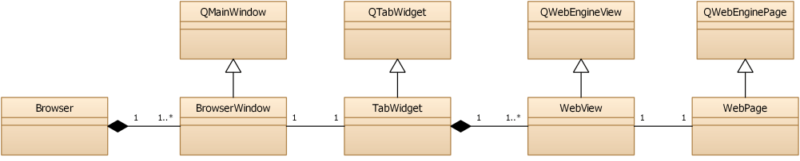

WebEngine Widgets Simple Browser Example
A simple browser based on Qt WebEngine Widgets.

Simple Browser demonstrates how to use the Qt WebEngine C++ classes to develop a small Web browser application that contains the following elements:
- Menu bar for opening stored pages and managing windows and tabs.
- Navigation bar for entering a URL and for moving backward and forward in the web page browsing history.
- Multi-tab area for displaying web content within tabs.
- Status bar for displaying hovered links.
- A simple download manager.
The web content can be opened in new tabs or separate windows. HTTP and proxy authentication can be used for accessing web pages.
Running the Example
To run the example from Qt Creator, open the Welcome mode and select the example from Examples. For more information, visit Building and Running an Example.
Class Hierarchy
We start with sketching a diagram of the main classes that we are going to implement:

Browseris a class managing the application windows.BrowserWindowis a QMainWindow showing the menu, a navigation bar,TabWidget, and a status bar.TabWidgetis a QTabWidget and contains one or multiple browser tabs.WebViewis a QWebEngineView, provides a view forWebPage, and is added as a tab inTabWidget.WebPageis a QWebEnginePage that represents website content.
Additionally, we will implement some auxiliary classes:
WebPopupWindowis a QWidget for showing popup windows.DownloadManagerWidgetis a QWidget implementing the downloads list.
Creating the Browser Main Window
This example supports multiple main windows that are owned by a Browser object. This class also owns the DownloadManagerWidget and could be used for further functionality, such as bookmarks and history managers.
In main.cpp, we create the first BrowserWindow instance and add it to the Browser object. If no arguments are passed on the command line, we open the Qt Homepage:
int main(int argc, char **argv) { QCoreApplication::setOrganizationName("QtExamples"); QApplication app(argc, argv); app.setWindowIcon(QIcon(u":AppLogoColor.png"_s)); QLoggingCategory::setFilterRules(u"qt.webenginecontext.debug=true"_s); QWebEngineProfile::defaultProfile()->settings()->setAttribute(QWebEngineSettings::PluginsEnabled, true); QWebEngineProfile::defaultProfile()->settings()->setAttribute(QWebEngineSettings::DnsPrefetchEnabled, true); QUrl url = commandLineUrlArgument(); Browser browser; BrowserWindow *window = browser.createHiddenWindow(); window->tabWidget()->setUrl(url); window->show(); return app.exec(); }
To suppress flicker when switching the window to OpenGL rendering, we call show after the first browser tab has been added.
Creating Tabs
The BrowserWindow constructor initializes all the necessary user interface related objects. The centralWidget of BrowserWindow contains an instance of TabWidget. The TabWidget contains one or several WebView instances as tabs, and delegates it's signals and slots to the currently selected one:
class TabWidget : public QTabWidget { ... signals: // current tab/page signals void linkHovered(const QString &link); void loadProgress(int progress); void titleChanged(const QString &title); void urlChanged(const QUrl &url); void favIconChanged(const QIcon &icon); void webActionEnabledChanged(QWebEnginePage::WebAction action, bool enabled); void devToolsRequested(QWebEnginePage *source); void findTextFinished(const QWebEngineFindTextResult &result); public slots: // current tab/page slots void setUrl(const QUrl &url); void triggerWebPageAction(QWebEnginePage::WebAction action); ... };
Each tab contains an instance of WebView:
WebView *TabWidget::createTab() { WebView *webView = createBackgroundTab(); setCurrentWidget(webView); return webView; } WebView *TabWidget::createBackgroundTab() { WebView *webView = new WebView; WebPage *webPage = new WebPage(m_profile, webView); webView->setPage(webPage); setupView(webView); int index = addTab(webView, tr("(Untitled)")); setTabIcon(index, webView->favIcon()); // Workaround for QTBUG-61770 webView->resize(currentWidget()->size()); webView->show(); return webView; }
In TabWidget::setupView(), we make sure that the TabWidget always forwards the signals of the currently selected WebView:
void TabWidget::setupView(WebView *webView) { QWebEnginePage *webPage = webView->page(); connect(webView, &QWebEngineView::titleChanged, [this, webView](const QString &title) { int index = indexOf(webView); if (index != -1) { setTabText(index, title); setTabToolTip(index, title); } if (currentIndex() == index) emit titleChanged(title); }); connect(webView, &QWebEngineView::urlChanged, [this, webView](const QUrl &url) { int index = indexOf(webView); if (index != -1) tabBar()->setTabData(index, url); if (currentIndex() == index) emit urlChanged(url); }); connect(webView, &QWebEngineView::loadProgress, [this, webView](int progress) { if (currentIndex() == indexOf(webView)) emit loadProgress(progress); }); connect(webPage, &QWebEnginePage::linkHovered, [this, webView](const QString &url) { if (currentIndex() == indexOf(webView)) emit linkHovered(url); }); connect(webView, &WebView::favIconChanged, [this, webView](const QIcon &icon) { int index = indexOf(webView); if (index != -1) setTabIcon(index, icon); if (currentIndex() == index) emit favIconChanged(icon); }); connect(webView, &WebView::webActionEnabledChanged, [this, webView](QWebEnginePage::WebAction action, bool enabled) { if (currentIndex() == indexOf(webView)) emit webActionEnabledChanged(action,enabled); }); connect(webPage, &QWebEnginePage::windowCloseRequested, [this, webView]() { int index = indexOf(webView); if (webView->page()->inspectedPage()) window()->close(); else if (index >= 0) closeTab(index); }); connect(webView, &WebView::devToolsRequested, this, &TabWidget::devToolsRequested); connect(webPage, &QWebEnginePage::findTextFinished, [this, webView](const QWebEngineFindTextResult &result) { if (currentIndex() == indexOf(webView)) emit findTextFinished(result); }); }
Implementing WebView Functionality
The WebView is derived from QWebEngineView to support the following functionality:
- Displaying error messages in case
renderProcessdies - Handling
createWindowrequests - Adding custom menu items to context menus
First, we create the WebView with the necessary methods and signals:
class WebView : public QWebEngineView { Q_OBJECT public: explicit WebView(QWidget *parent = nullptr); ... protected: void contextMenuEvent(QContextMenuEvent *event) override; QWebEngineView *createWindow(QWebEnginePage::WebWindowType type) override; signals: void webActionEnabledChanged(QWebEnginePage::WebAction webAction, bool enabled); ... };
Displaying Error Messages
If the render process is terminated, we display a QMessageBox with an error code, and then we reload the page:
WebView::WebView(QWidget *parent) : QWebEngineView(parent) { ... connect(this, &QWebEngineView::renderProcessTerminated, [this](QWebEnginePage::RenderProcessTerminationStatus termStatus, int statusCode) { QString status; switch (termStatus) { case QWebEnginePage::NormalTerminationStatus: status = tr("Render process normal exit"); break; case QWebEnginePage::AbnormalTerminationStatus: status = tr("Render process abnormal exit"); break; case QWebEnginePage::CrashedTerminationStatus: status = tr("Render process crashed"); break; case QWebEnginePage::KilledTerminationStatus: status = tr("Render process killed"); break; } QMessageBox::StandardButton btn = QMessageBox::question(window(), status, tr("Render process exited with code: %1\n" "Do you want to reload the page ?").arg(statusCode)); if (btn == QMessageBox::Yes) QTimer::singleShot(0, this, &WebView::reload); }); }
Managing WebWindows
The loaded page might want to create windows of the type QWebEnginePage::WebWindowType, for example, when a JavaScript program requests to open a document in a new window or dialog. This is handled by overriding QWebView::createWindow():
QWebEngineView *WebView::createWindow(QWebEnginePage::WebWindowType type) { BrowserWindow *mainWindow = qobject_cast<BrowserWindow*>(window()); if (!mainWindow) return nullptr; switch (type) { case QWebEnginePage::WebBrowserTab: { return mainWindow->tabWidget()->createTab(); }
In case of QWebEnginePage::WebDialog, we create an instance of a custom WebPopupWindow class:
class WebPopupWindow : public QWidget { Q_OBJECT public: explicit WebPopupWindow(QWebEngineProfile *profile); WebView *view() const; private slots: void handleGeometryChangeRequested(const QRect &newGeometry); private: QLineEdit *m_urlLineEdit; QAction *m_favAction; WebView *m_view; };
Adding Context Menu Items
We add a menu item to the context menu, so that users can right-click to have an inspector opened in a new window. We override QWebEngineView::contextMenuEvent and use QWebEnginePage::createStandardContextMenu to create a default QMenu with a default list of QWebEnginePage::WebAction actions.
The default name for QWebEnginePage::InspectElement action is Inspect. For clarity, we rename it to Open Inspector In New Window when there is no Inspector present yet, and Inspect Element when it's already created.
We also check if the QWebEnginePage::ViewSource action is in the menu, because if it's not we have to add a separator as well.
void WebView::contextMenuEvent(QContextMenuEvent *event) { QMenu *menu = createStandardContextMenu(); const QList<QAction *> actions = menu->actions(); auto inspectElement = std::find(actions.cbegin(), actions.cend(), page()->action(QWebEnginePage::InspectElement)); if (inspectElement == actions.cend()) { auto viewSource = std::find(actions.cbegin(), actions.cend(), page()->action(QWebEnginePage::ViewSource)); if (viewSource == actions.cend()) menu->addSeparator(); QAction *action = menu->addAction("Open inspector in new window"); connect(action, &QAction::triggered, [this]() { emit devToolsRequested(page()); }); } else { (*inspectElement)->setText(tr("Inspect element")); } menu->popup(event->globalPos()); }
Implementing WebPage and WebView Functionality
We implement WebPage as a subclass of QWebEnginePage and WebView as as subclass of QWebEngineView to enable HTTP, proxy authentication, as well as ignoring SSL certificate errors when accessing web pages:
class WebPage : public QWebEnginePage { Q_OBJECT public: explicit WebPage(QWebEngineProfile *profile, QObject *parent = nullptr); signals: void createCertificateErrorDialog(QWebEngineCertificateError error); private slots: void handleCertificateError(QWebEngineCertificateError error); void handleSelectClientCertificate(QWebEngineClientCertificateSelection clientCertSelection); }; class WebView : public QWebEngineView { Q_OBJECT public: explicit WebView(QWidget *parent = nullptr); void setPage(WebPage *page); int loadProgress() const; bool isWebActionEnabled(QWebEnginePage::WebAction webAction) const; QIcon favIcon() const; protected: void contextMenuEvent(QContextMenuEvent *event) override; QWebEngineView *createWindow(QWebEnginePage::WebWindowType type) override; signals: void webActionEnabledChanged(QWebEnginePage::WebAction webAction, bool enabled); void favIconChanged(const QIcon &icon); void devToolsRequested(QWebEnginePage *source); private slots: void handleCertificateError(QWebEngineCertificateError error); void handleAuthenticationRequired(const QUrl &requestUrl, QAuthenticator *auth); void handleFeaturePermissionRequested(const QUrl &securityOrigin, QWebEnginePage::Feature feature); void handleProxyAuthenticationRequired(const QUrl &requestUrl, QAuthenticator *auth, const QString &proxyHost); void handleRegisterProtocolHandlerRequested(QWebEngineRegisterProtocolHandlerRequest request); #if QT_VERSION >= QT_VERSION_CHECK(6, 4, 0) void handleFileSystemAccessRequested(QWebEngineFileSystemAccessRequest request); #endif private: void createWebActionTrigger(QWebEnginePage *page, QWebEnginePage::WebAction); private: int m_loadProgress = 100; };
In all the cases above, we display the appropriate dialog to the user. In case of authentication, we need to set the correct credential values on the QAuthenticator object:
void WebView::handleAuthenticationRequired(const QUrl &requestUrl, QAuthenticator *auth) { QDialog dialog(window()); dialog.setModal(true); dialog.setWindowFlags(dialog.windowFlags() & ~Qt::WindowContextHelpButtonHint); Ui::PasswordDialog passwordDialog; passwordDialog.setupUi(&dialog); passwordDialog.m_iconLabel->setText(QString()); QIcon icon(window()->style()->standardIcon(QStyle::SP_MessageBoxQuestion, 0, window())); passwordDialog.m_iconLabel->setPixmap(icon.pixmap(32, 32)); QString introMessage(tr("Enter username and password for \"%1\" at %2") .arg(auth->realm(), requestUrl.toString().toHtmlEscaped())); passwordDialog.m_infoLabel->setText(introMessage); passwordDialog.m_infoLabel->setWordWrap(true); if (dialog.exec() == QDialog::Accepted) { auth->setUser(passwordDialog.m_userNameLineEdit->text()); auth->setPassword(passwordDialog.m_passwordLineEdit->text()); } else { // Set authenticator null if dialog is cancelled *auth = QAuthenticator(); } }
The handleProxyAuthenticationRequired signal handler implements the very same steps for the authentication of HTTP proxies.
In case of SSL errors, we just need to return a boolean value indicating whether the certificate should be ignored.
void WebPage::handleCertificateError(QWebEngineCertificateError error) { error.defer(); QTimer::singleShot(0, this, [this, error]() mutable { emit createCertificateErrorDialog(error); }); }
Opening a Web Page
This section describes the workflow for opening a new page. When the user enters a URL in the navigation bar and presses Enter, the QLineEdit::returnPressed signal is emitted and the new URL is then handed over to TabWidget::setUrl:
BrowserWindow::BrowserWindow(Browser *browser, QWebEngineProfile *profile, bool forDevTools) { ... connect(m_urlLineEdit, &QLineEdit::returnPressed, [this]() { m_tabWidget->setUrl(QUrl::fromUserInput(m_urlLineEdit->text())); }); ... }
The call is forwarded to the currently selected tab:
void TabWidget::setUrl(const QUrl &url) { if (WebView *view = currentWebView()) { view->setUrl(url); view->setFocus(); } }
The setUrl() method of WebView just forwards the url to the associated WebPage, which in turn starts the downloading of the page's content in the background.
Implementing Private Browsing
Private browsing, incognito mode, or off-the-record mode is a feature of many browsers where normally persistent data, such as cookies, the HTTP cache, or browsing history, is kept only in memory, leaving no trace on disk. In this example we will implement private browsing on the window level with tabs in one window all in either normal or private mode. Alternatively we could implement private browsing on the tab-level, with some tabs in a window in normal mode, others in private mode.
Implementing private browsing is quite easy using Qt WebEngine. All one has to do is to create a new QWebEngineProfile and use it in the QWebEnginePage instead of the default profile. In the example this new profile is owned by the Browser object:
class Browser { public: ... BrowserWindow *createHiddenWindow(bool offTheRecord = false); BrowserWindow *createWindow(bool offTheRecord = false); private: ... QScopedPointer<QWebEngineProfile> m_profile; };
Required profile for private browsing is created together with its first window. The default constructor for QWebEngineProfile already puts it in off-the-record mode.
BrowserWindow *Browser::createHiddenWindow(bool offTheRecord) { if (!offTheRecord && !m_profile) { const QString name = u"simplebrowser."_s + QLatin1StringView(qWebEngineChromiumVersion()); m_profile.reset(new QWebEngineProfile(name)); ...
All that is left to do is to pass the appropriate profile down to the appropriate QWebEnginePage objects. The Browser object will hand to each new BrowserWindow either the global default profile (see QWebEngineProfile::defaultProfile) or one shared off-the-record profile instance:
...
QObject::connect(m_profile.get(), &QWebEngineProfile::downloadRequested,
&m_downloadManagerWidget, &DownloadManagerWidget::downloadRequested);
}
auto profile = !offTheRecord ? m_profile.get() : QWebEngineProfile::defaultProfile();
auto mainWindow = new BrowserWindow(this, profile, false);
return mainWindow;
}
The BrowserWindow and TabWidget objects will then ensure that all QWebEnginePage objects contained in a window will use this profile.
Managing Downloads
Downloads are associated with a QWebEngineProfile. Whenever a download is triggered on a web page the QWebEngineProfile::downloadRequested signal is emitted with a QWebEngineDownloadRequest, which in this example is forwarded to DownloadManagerWidget::downloadRequested:
Browser::Browser() { // Quit application if the download manager window is the only remaining window m_downloadManagerWidget.setAttribute(Qt::WA_QuitOnClose, false); QObject::connect( QWebEngineProfile::defaultProfile(), &QWebEngineProfile::downloadRequested, &m_downloadManagerWidget, &DownloadManagerWidget::downloadRequested); }
This method prompts the user for a file name (with a pre-filled suggestion) and starts the download (unless the user cancels the Save As dialog):
void DownloadManagerWidget::downloadRequested(QWebEngineDownloadRequest *download) { Q_ASSERT(download && download->state() == QWebEngineDownloadRequest::DownloadRequested); QString path = QFileDialog::getSaveFileName(this, tr("Save as"), QDir(download->downloadDirectory()).filePath(download->downloadFileName())); if (path.isEmpty()) return; download->setDownloadDirectory(QFileInfo(path).path()); download->setDownloadFileName(QFileInfo(path).fileName()); download->accept(); add(new DownloadWidget(download)); show(); }
The QWebEngineDownloadRequest object will periodically emit the receivedBytesChanged signal to notify potential observers of the download progress and the stateChanged signal when the download is finished or when an error occurs. See downloadmanagerwidget.cpp for an example of how these signals can be handled.
Signing Requirement for macOS
To allow web sites access to the location, camera, and microphone when running Simple Browser on macOS, the application needs to be signed. This is done automatically when building, but you need to set up a valid signing identity for the build environment.
Files and Attributions
The example uses icons from the Tango Icon Library:
| Tango Icon Library | Public Domain |